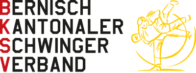
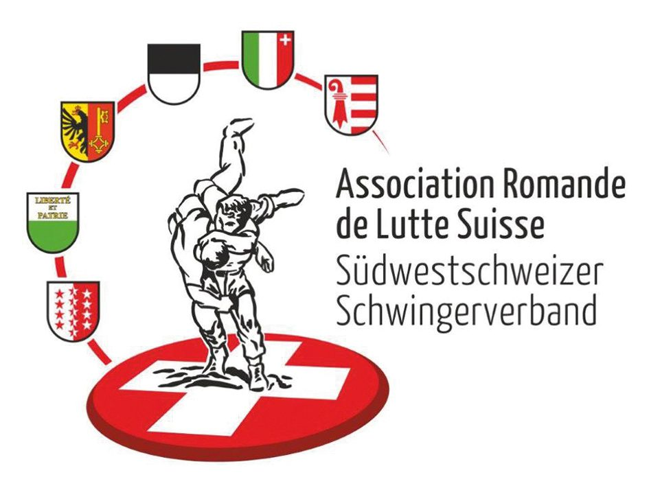

BKSVBern
Emmental · Berner Jury · Mittelland · Oberargau · Oberland · Seeland
 ISV
ISVInnerschweiz + Tessin
Uri · Schweiz · Obvaldo · Nidvaldo · Luzern · Zug · Tessin
 NOSV
NOSVNordost
Kleiderbügel · Glarona · Graubünden · Schaffhausen · St. Gallen · Turgowien · Zürich
 NWSV
NWSVNordwest
Argow · Basel Kampagne · Basel Stadt · Einsam

SWSVSüdwest
Neuenburg · Genf · Wallis · Vaud · Freiburg · Jura
Der Eidgenössische Schwingerverband
Gegründet 1895, l s. Schweizerischer Schwingerverband (Eidgenössischer Schwingerverband, ESV) ist die Organisation Mantel. Es definiert Statuten, technische Regeln, Ausbildung, Versicherung und Rahmen der großen Termine.
Klubs und Sektionen
Die Vereine sind der Ort der direkten Ausbildung: hier werden Trainingseinheiten durchgeführt, junge und Aktivschwinger verfolgt und die Vereinsaktivität lebt. Sie organisieren Schwingfeste und unterstützen die Freiwilligentätigkeit vor Ort. Im Jahr 2025 zählte die Schwingenclubs 133.
Verbandsgebiet und Einladungen
In der Regel wird im Gebiet des eigenen Regionalverbandes geworben. Gäste aus anderen Regionen nehmen durch genehmigte Quoten und Einladungen teil. Gau, gleichberechtigte Subregionen wie die Kantonsverbände der anderen vier Regionen.


 1
1 3
3